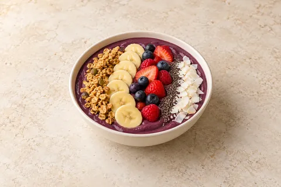
My favourites
Recipes you love, ready for next time. Saved in this browser on this device; clearing site data removes them.

Aubergine Parmigiana
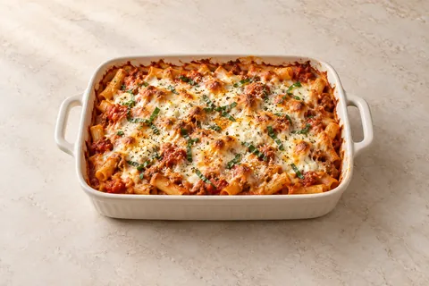
Baked Ziti
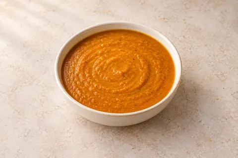
Base Gravy
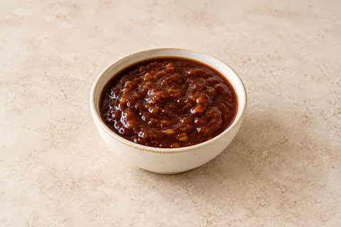
BBQ Sauce

Breakfast Wraps

Brioche French Toast with Cinnamon Sugar & Maple Butter
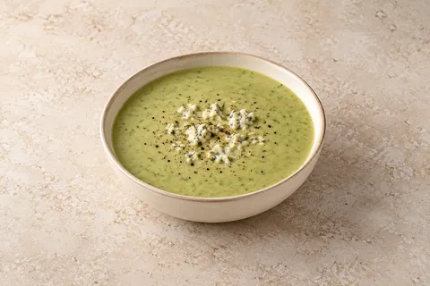
Broccoli & Stilton Soup
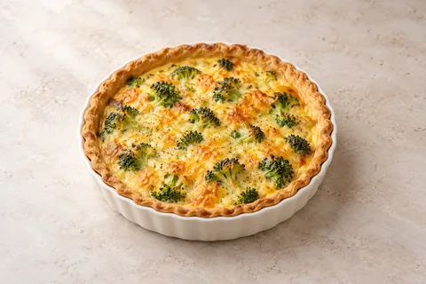
Broccoli Quiche
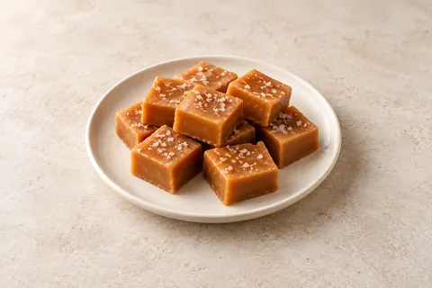
Caramel Fudge
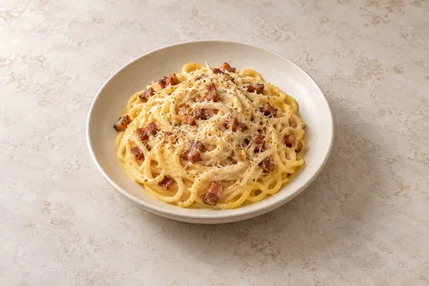
Carbonara
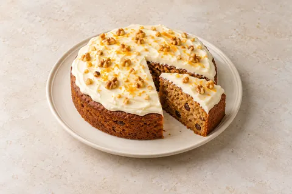
Carrot Cake
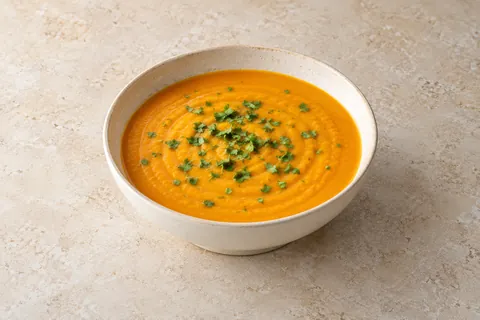
Carrot Soup

Chicken & Chorizo Jambalaya

Chicken Caesar Wraps

Chicken Chow Mein

Chicken Shawarma Flatbreads

Chicken Stroganoff

Chicken, Chorizo & Potato Bake
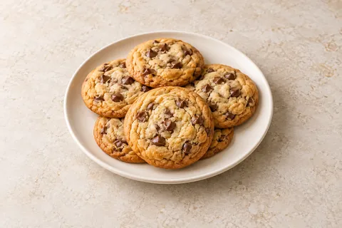
Chocolate Chip Cookies
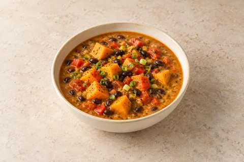
Coconutty Caribbean Soup

Coronation Chicken Sandwiches
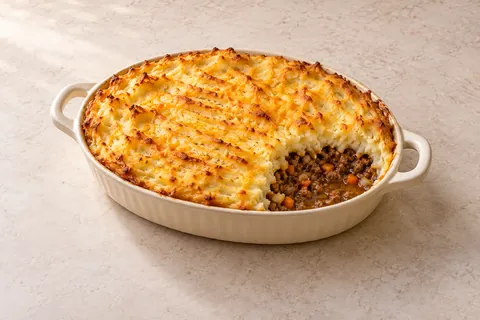
Cottage Pie

Creamy Chicken, Leek & Mushroom Pie
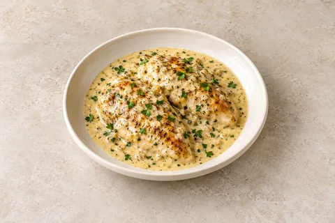
Creamy Garlic Chicken
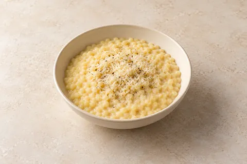
Creamy Pastina

Crispy Chilli Beef

Crispy Halloumi Pittas

Croque Monsieur
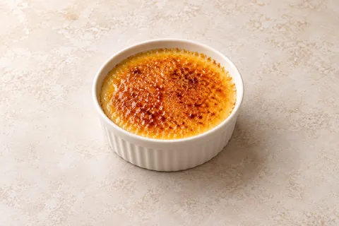
Crème Brûlée

Fluffy Pancakes

French Onion Soup
Ginger and Lime Chicken Noodle Soup

Greek Beef Pastitsio

Greek Chicken Couscous Salad
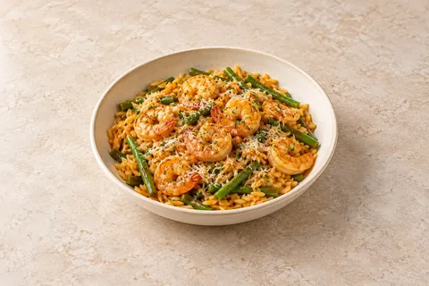
Harissa Prawn Orzo
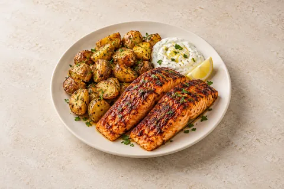
Harissa Salmon with Crispy Potatoes & Lemon Yoghurt
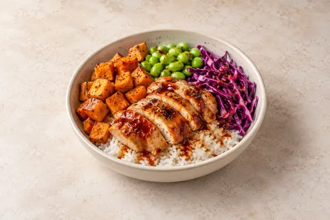
Indonesian Chicken Poke Bowl

Jack Daniel’s Glazed Chicken
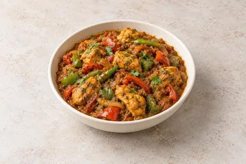
Jalfrezi

Key Lime Pie
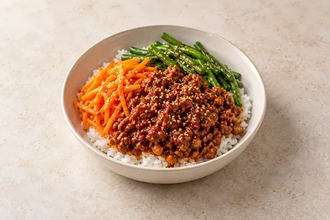
Korean Style Gochujang Beef and Pork Bibimbap

Leek and Potato Soup
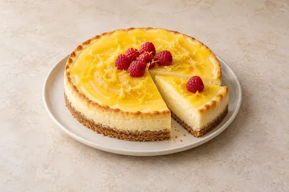
Lemon Cheesecake
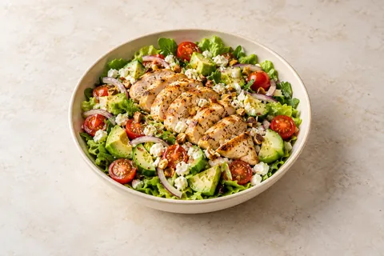
Lemon Chicken Salad
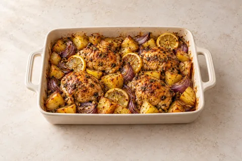
Lemon, Garlic & Oregano Chicken Traybake

Meatball Penne
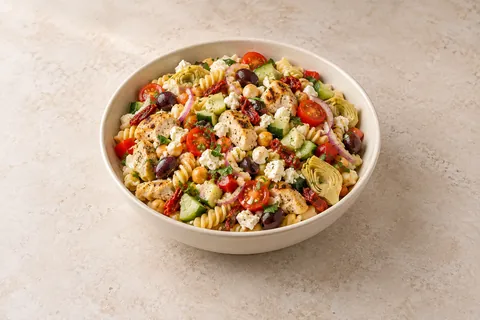
Mediterranean Pasta Salad
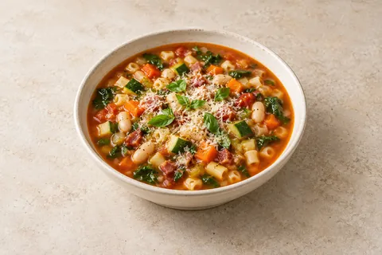
Minestrone
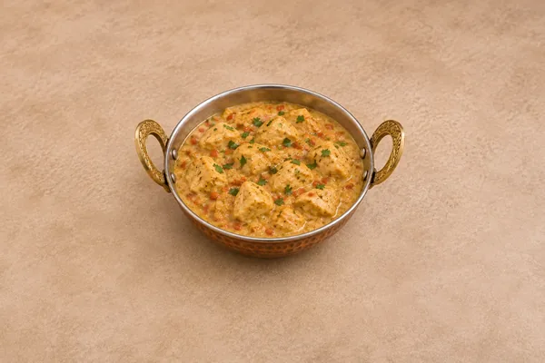
Moghul Curry

Moroccan Chicken Filo Pie
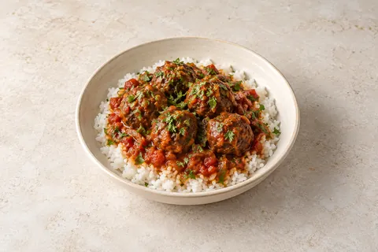
Moroccan Meatballs

Mozzarella Pesto Toasties
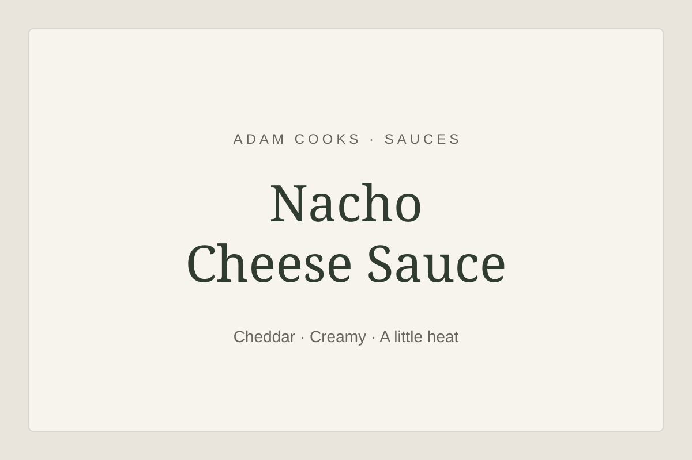
Nacho Cheese Sauce

Panda Express Orange Chicken
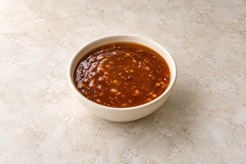
Panda Express Orange Chicken Sauce
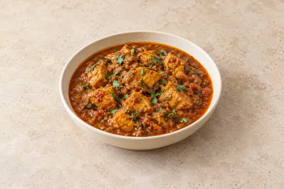
Pathia Curry
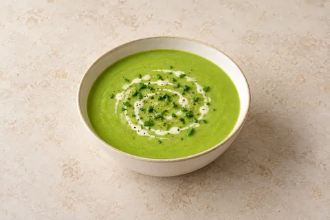
Pea & Asparagus Soup

Penne Arrabbiata
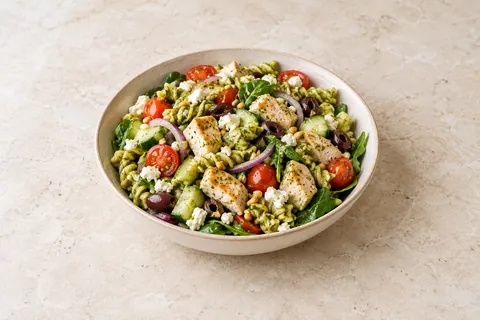
Pesto Pasta Salad
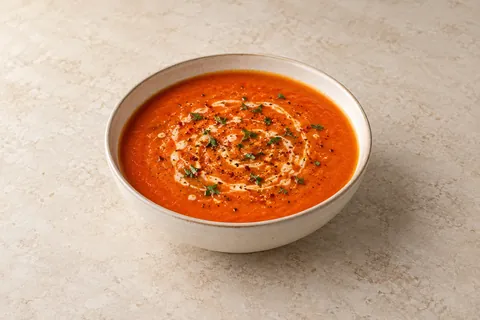
Red Pepper Soup

Rosemary Focaccia

Salt-and-Pepper Chicken
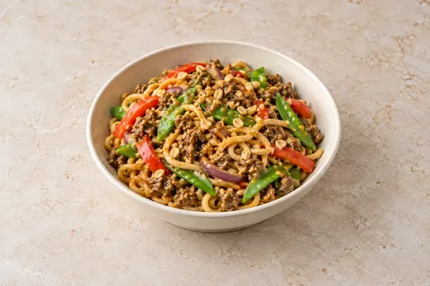
Satay Beef Noodles

Sausage, Leek & Mustard Gratin

Shakshuka

Slow Cooker Beef Bourguignon
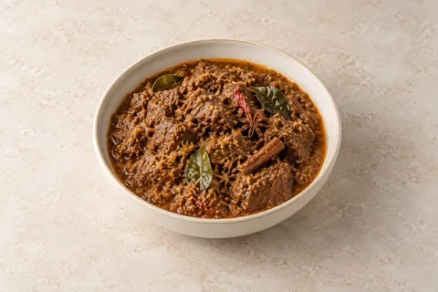
Slow Cooker Beef Rendang

Slow Cooker Chicken Chasseur
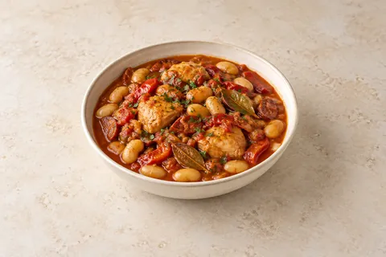
Slow Cooker Chicken, Chorizo & Butter Bean Stew
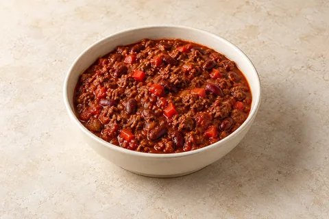
Slow Cooker Smoky Hot Chilli Con Carne
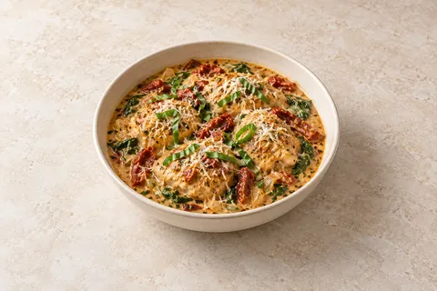
Slow Cooker Tuscan Chicken
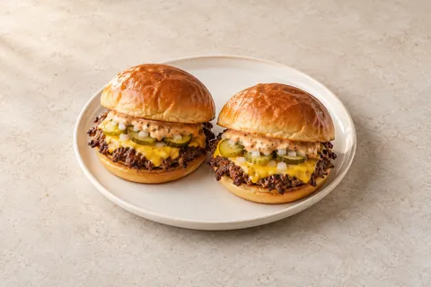
Smash Cheeseburgers
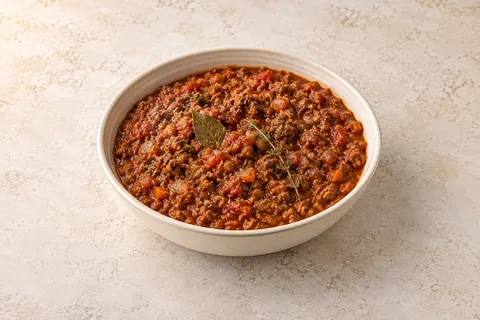
Sofritto Ragu
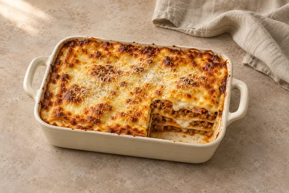
Sofritto Ragù Lasagne
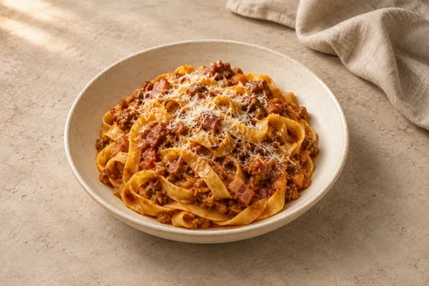
Sofritto Ragù with Tagliatelle

Sourdough

Spiced Carrot & Lentil Soup

Spiced Parsnip Soup

Spinach & Ricotta Cannelloni

Steak Ciabatta
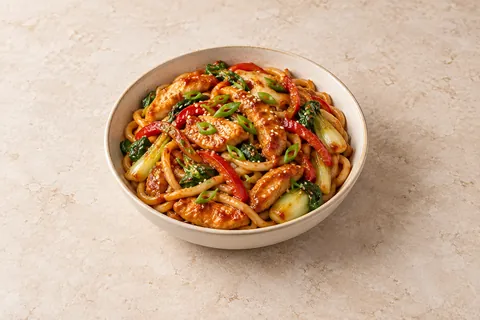
Sticky Gochujang Chicken Noodles

Thai Chicken Curry
Thai Curry Rice Bowl

Tiger Bread
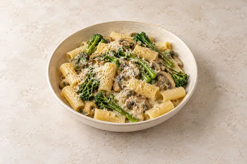
Truffle Pasta
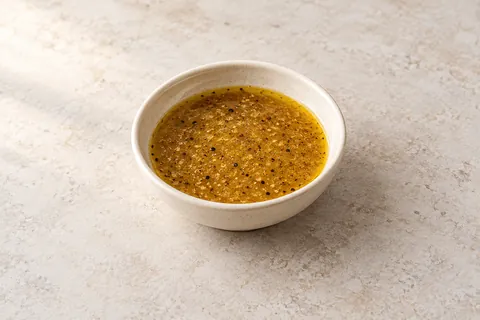